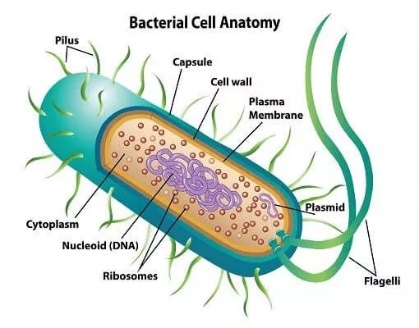
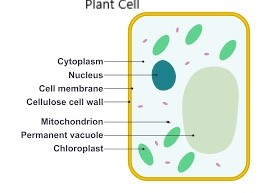
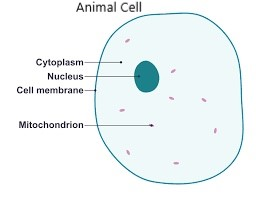

What is life?
All living things share life processes. Scientists use the seven life processes to determine if something is living or not.
All living organisms are made up of cells (smallest part of a living organism). There are two main types of organisms based on the structure of the cell, with the biggest difference being the presence of the nucleus. Cells containing a nucleus are eukaryotic cells and cells without a nucleus are prokaryotic cells.
Eukaryotic cells make up organisms such as plants and animals Eg: bacteria. Cells are the basic structural and functional units of all living organisms. The cell is microscopic in size which means that it cannot be seen except with a microscope. Organisms are made up of different cells, which are specialized to perform a specific function. Depending on the function it can specialize by having a different size and shape. E.g.: nerve cells and red blood cells have different functions in a body, so their structures are different.
Components of the structure that are common to all cells include:
Every cell has a cell membrane around it, it is a thin layer that encloses and separates it from its surroundings. The cell membrane controls which substances are allowed to come in and out the cell. It is selectively permeable (allows liquids and gases to pass through it).
The cytoplasm is the jelly -like substance in a cell. It consists of water, with a collection of structures and materials which are dissolved or suspended. Cytoplasm provides a liquid balance for all the chemical reactions in the cell.
Plant and animal cells have a nucleus in the cytoplasm, which controls processes and chemical reactions that occur in the cell. It also contains the cells genetic material, that is organized into DNA molecules.

The difference between eukaryotic cells and prokaryotic cells: Eukaryotic cells have a nucleus that contains the genetic material surrounded by a membrane. Prokaryotic DNA floats in the cytoplasm with no membrane.
Life isn’t possible without energy